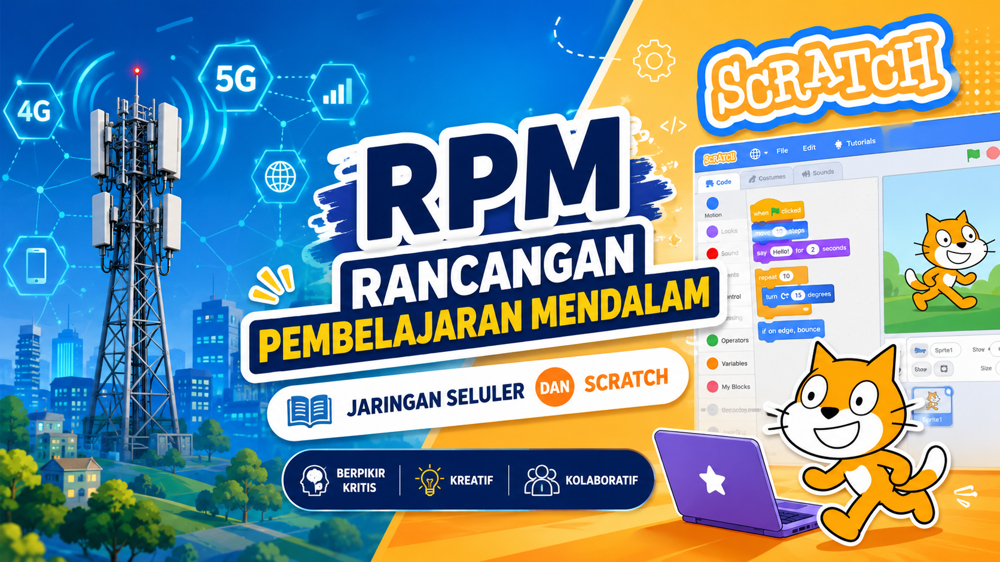
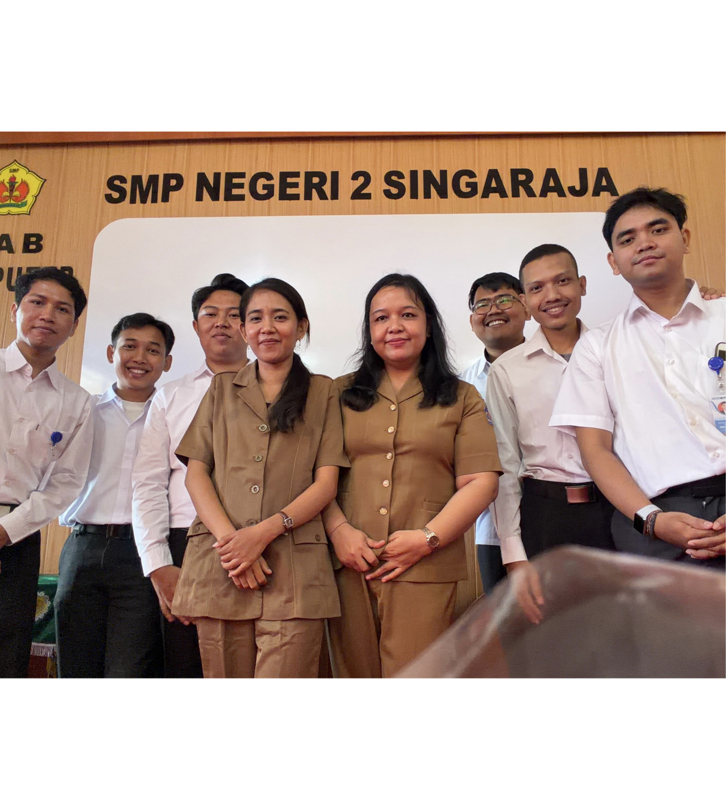
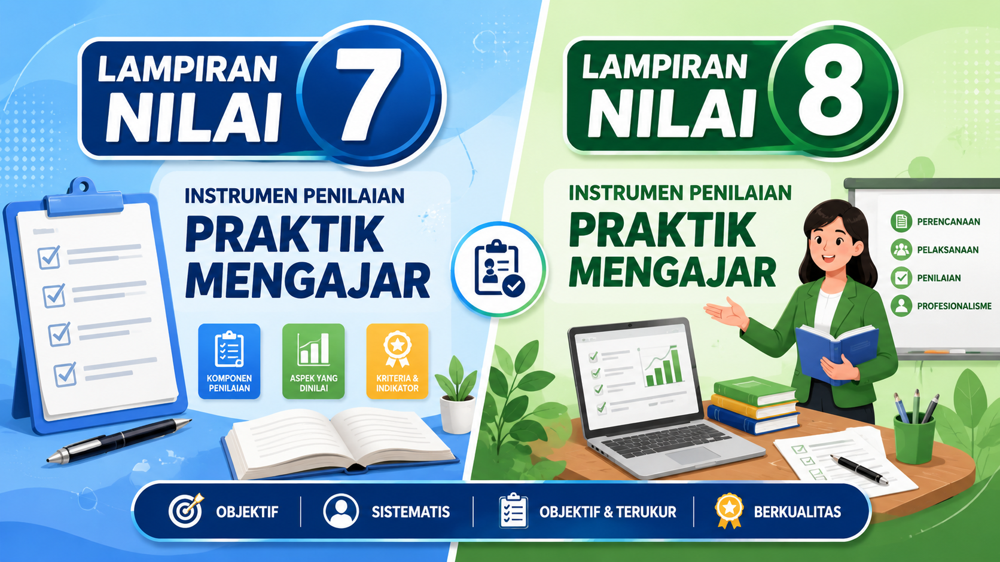
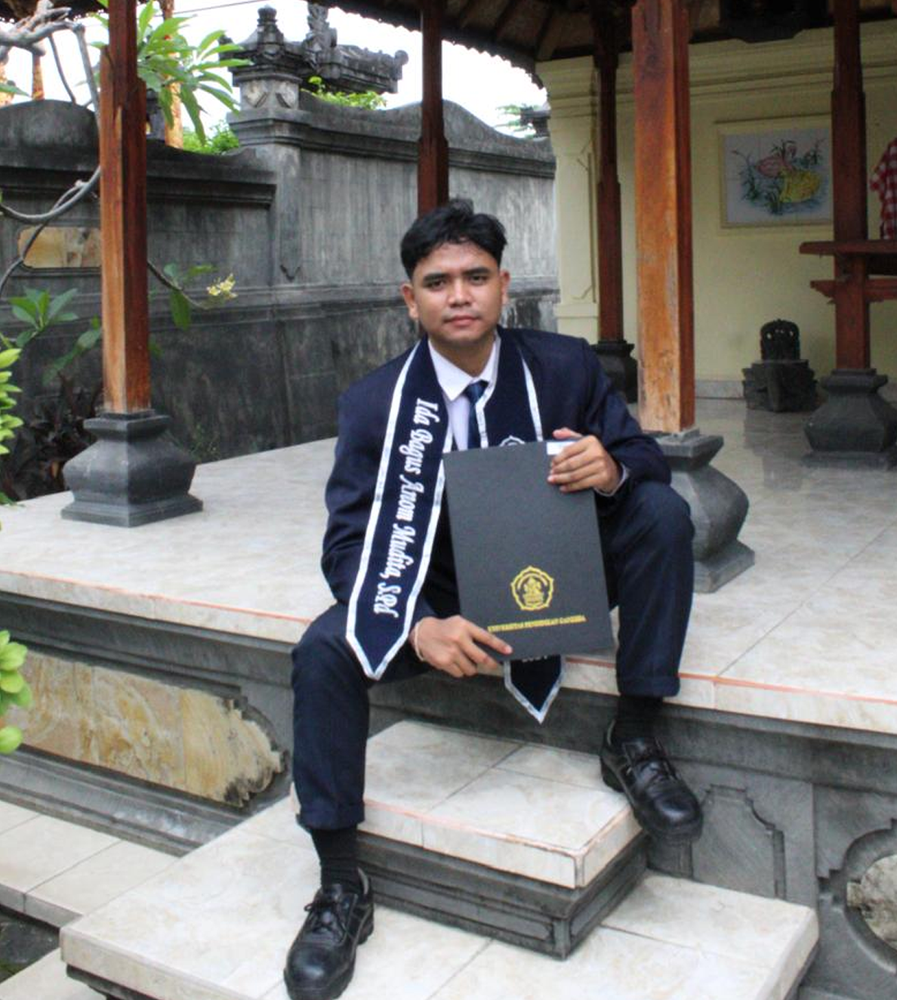

Hai, Saya Seorang Calon Guru
Ida Bagus Anom Mudita, S.Pd
Saya merupakan mahasiswa PPG(Pendidikan Profesi Guru) 2026 asal Singaraja, Buleleng, yang dikenal sebagai Kota Pendidikan. Saya terinspirasi menjadi Guru oleh Sandhika Galih yang mengajarkan web development dengan cara menarik. Saya bercita-cita menjadi guru profesional yang tidak hanya mentransfer ilmu, tetapi juga menanamkan nilai moral dan memotivasi siswa untuk memiliki daya juang tinggi dalam menuntut ilmu, karena hal tersebut sangat penting sebagai bekal menghadapi dunia kerja di masa depan.
Praktik Pengalaman Lapangan I
Pada kegiatan PPL I terbimbing ini, saya mendapat penugasan sebagai calon guru di SMP Negeri 2 Singaraja. Letak sekolah yang relatif dekat dengan tempat tinggal saya memberikan kemudahan dalam menjalankan seluruh rangkaian kegiatan PPL. Dalam pelaksanaannya, saya diberikan tanggung jawab untuk mengajar di kelas VIII.1 dan VIII.5.
Guru Pamong Lapangan:
1.Ni Luh Putu Febry Erawati, S.Pd
Dosen Pembimbing Lapangan :
1. Prof. Dr. Ir. Dewa Gede Hendra Divayana, S.Kom., M.Kom., MCE., IPU., ASEAN.Eng., APEC.Eng.

Produk Rencana dan Perangkat Pembelajaran
Lampiran Nilai 7 & 8

Model guru yang dituju

Dedikasi Guru Menurut Saya
Model guru yang saya tuju adalah menjadi seorang guru yang memiliki dedikasi tinggi dalam mengajar dan membimbing peserta didik. Saya ingin tetap menjalankan tugas sebagai pendidik dengan penuh tanggung jawab, semangat, dan kesabaran dalam keadaan apapun. Bagi saya, guru bukan hanya menyampaikan materi pembelajaran, tetapi juga menjadi motivator dan inspirasi bagi siswa agar terus berkembang dan percaya pada kemampuan diri mereka sendiri.
Saya juga terinspirasi dari salah satu dosen dan content creator pendidikan, yaitu WPU UNPAS melalui channel YouTube beliau. Cara beliau mengajarkan pemrograman sangat menarik, unik, dan mudah dipahami. Penjelasan yang sederhana namun jelas membuat materi yang sulit menjadi lebih mudah dimengerti. Hal tersebut membuat saya termotivasi untuk menjadi guru yang mampu menjelaskan materi dengan cara yang kreatif, menyenangkan, dan mudah dipahami oleh siswa.
Sebagai calon guru TIK, saya ingin menerapkan pembelajaran berbasis teknologi agar proses belajar menjadi lebih interaktif dan menarik. Saya akan memanfaatkan media digital seperti video pembelajaran, presentasi interaktif, coding sederhana, dan platform pembelajaran online untuk membantu siswa memahami materi dengan lebih baik. Selain itu, saya juga ingin menerapkan metode non-teknologi seperti unplugged learning dan learning kit agar siswa dapat belajar melalui aktivitas langsung dan praktik sederhana. Dengan kombinasi pembelajaran teknologi dan non-teknologi tersebut, saya berharap siswa dapat memahami materi secara lebih mendalam, aktif dalam belajar, serta memiliki pengalaman belajar yang menyenangkan.
Selain mengajarkan ilmu akademik, saya juga ingin menanamkan nilai moral, etika, cara bergaul yang baik, serta memberikan pemahaman mengenai realita kehidupan di luar lingkungan sekolah. Saya ingin siswa tidak hanya cerdas dalam bidang akademik, tetapi juga memiliki sikap yang baik, mampu menghargai orang lain, bekerja sama, dan siap menghadapi tantangan dunia nyata di masa depan. Dengan begitu, siswa tidak akan merasa terkejut ketika menghadapi kehidupan di luar sekolah maupun dunia kerja nantinya.
Dalam proses pembelajaran, saya juga akan menerapkan metode pembelajaran yang relevan dengan karakteristik siswa. Saya percaya bahwa setiap siswa memiliki kemampuan, minat, dan gaya belajar yang berbeda-beda. Oleh karena itu, saya ingin menciptakan suasana belajar yang fleksibel, nyaman, dan menyenangkan agar siswa dapat belajar secara maksimal sesuai dengan potensi yang dimiliki.
Kontak Saya
gusmangananda@gmail.com
081907490488
Singaraja, Kecamatan Buleleng
Tersedia: Senin-Sabtu, 07:00-17:00